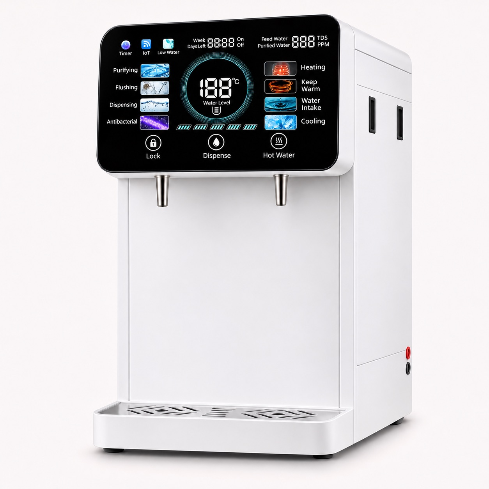
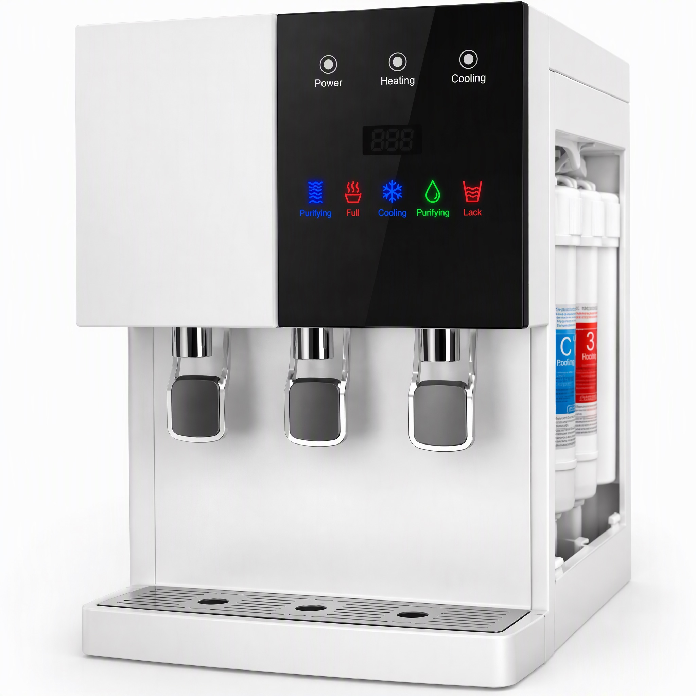
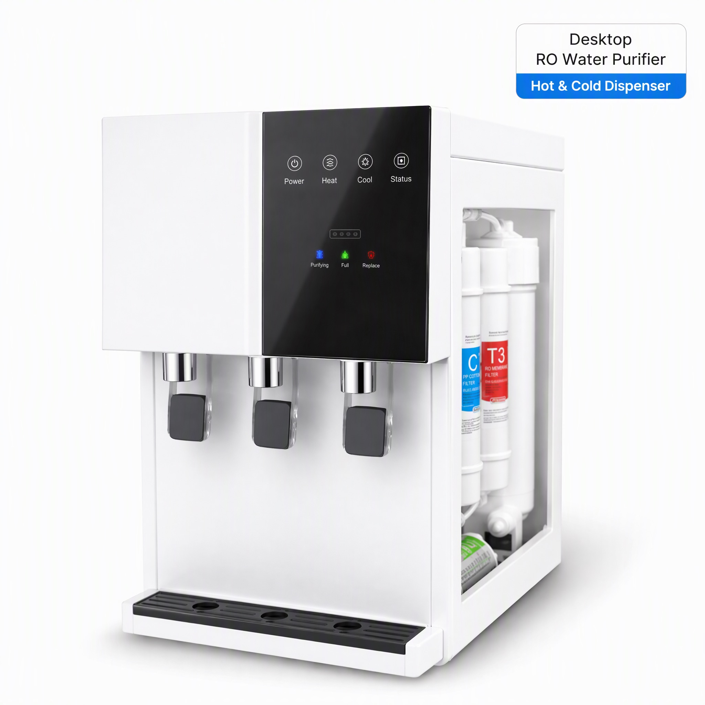
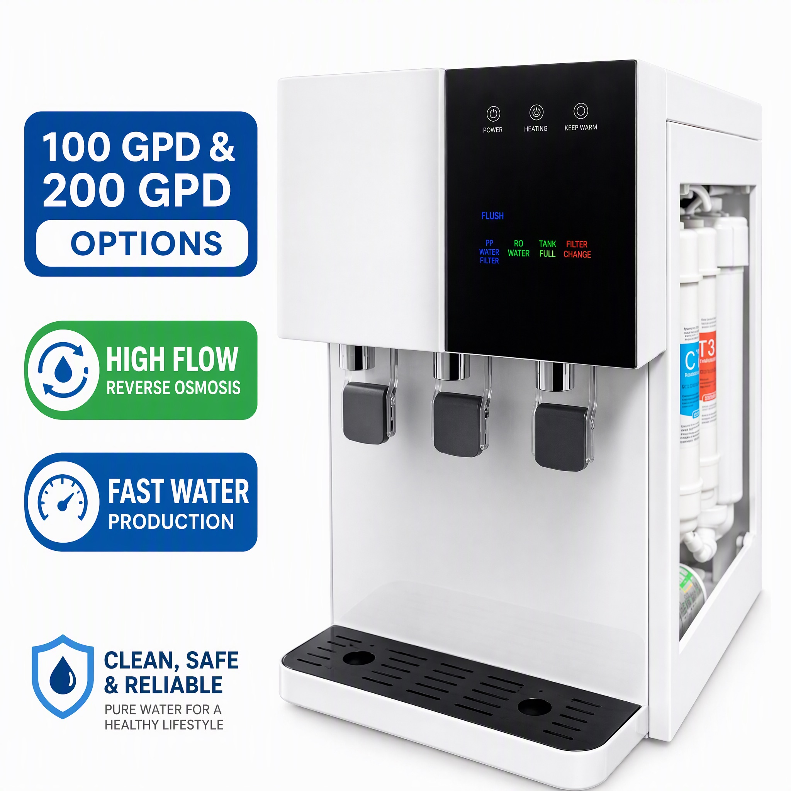
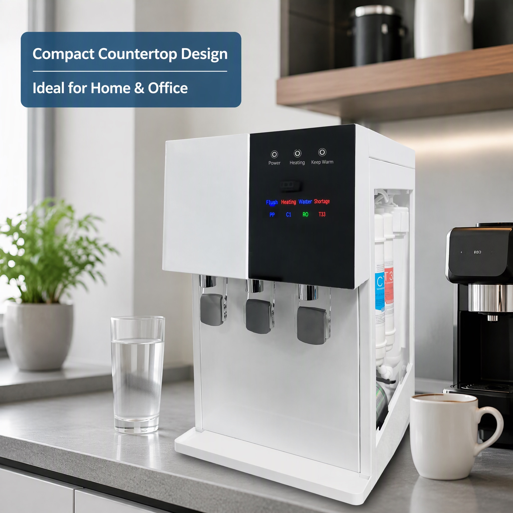
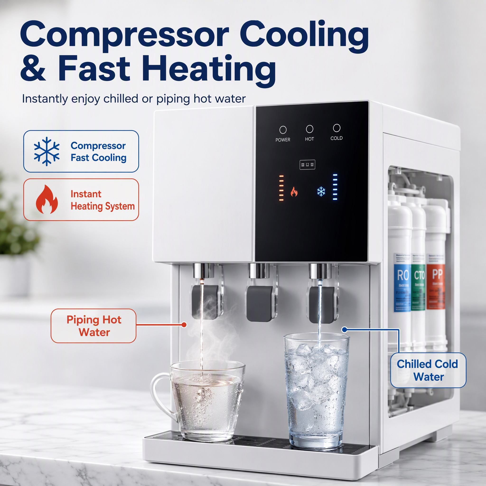
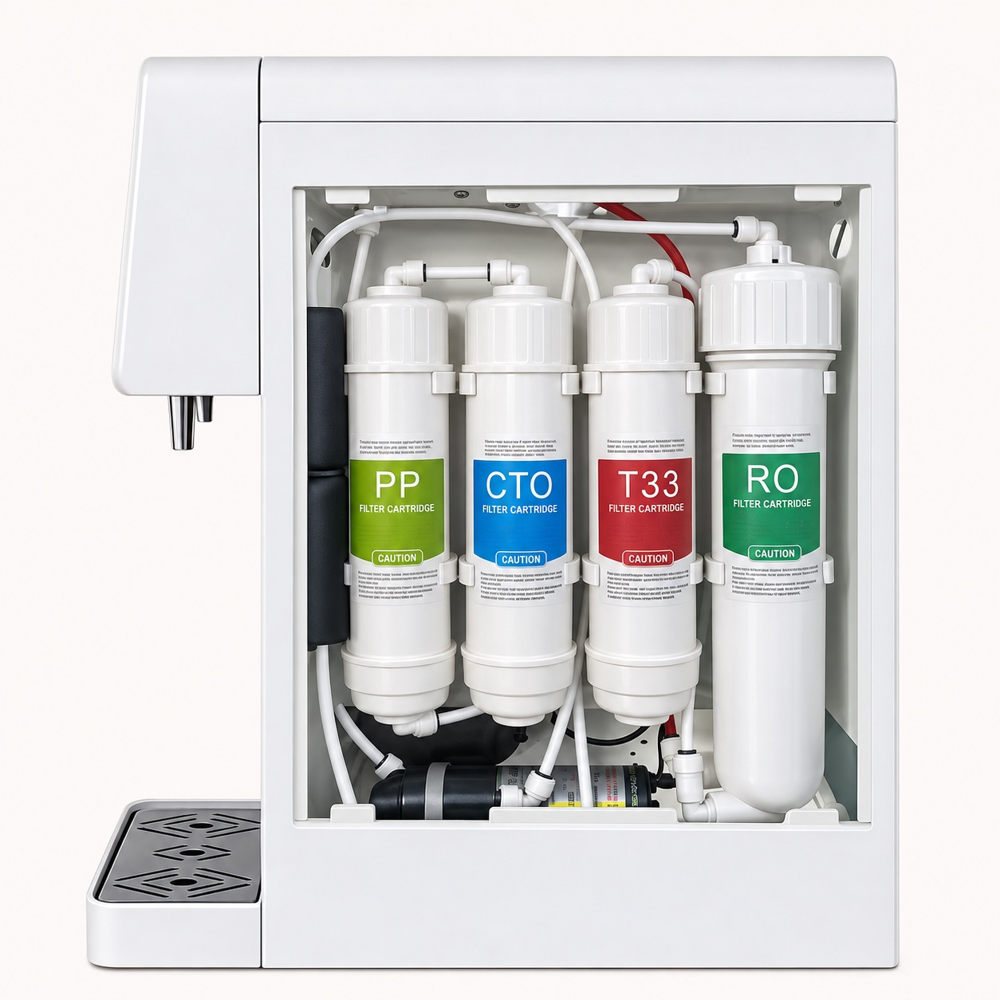
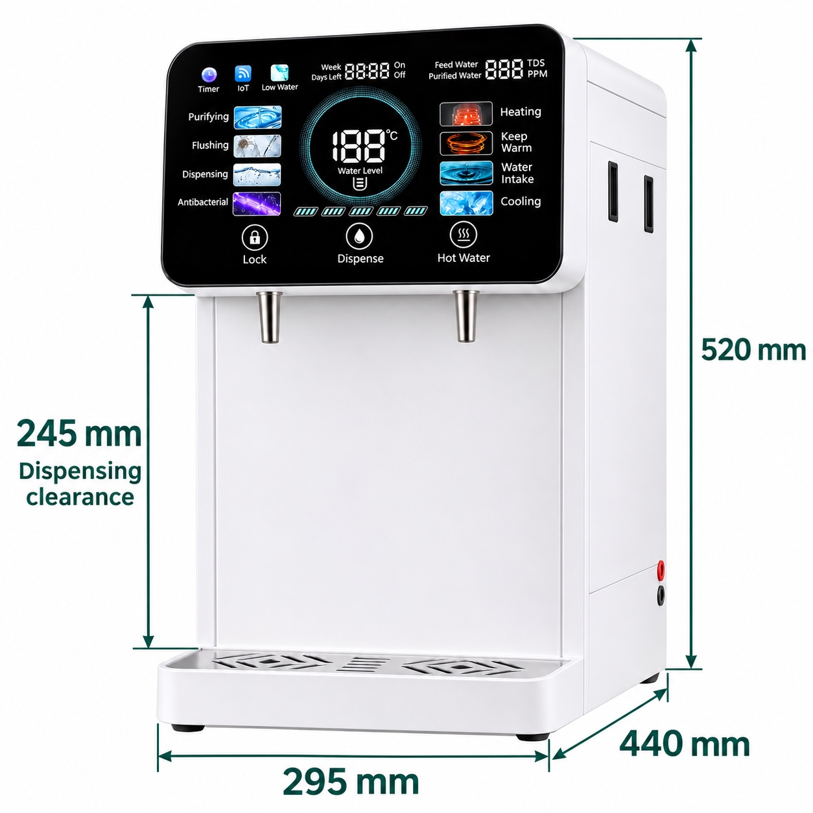
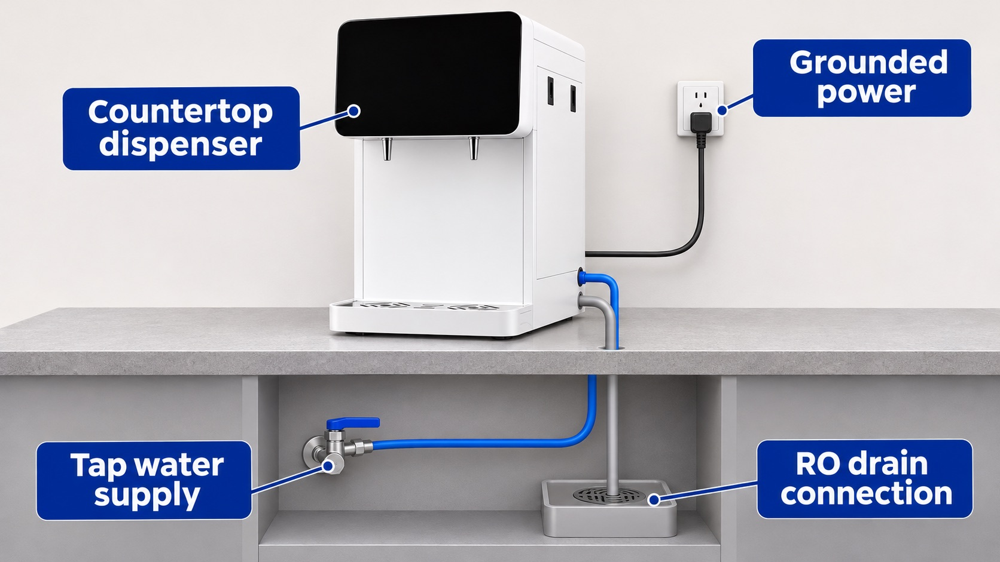
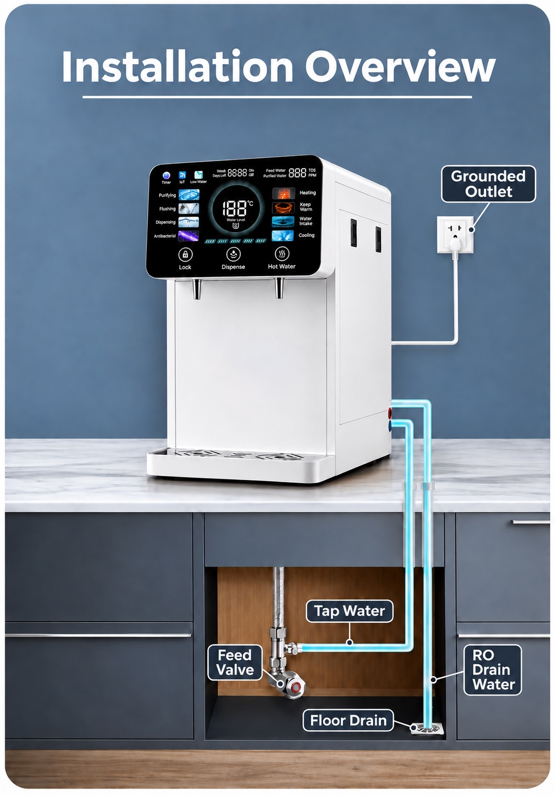

A plumbed-in reverse osmosis water dispenser with compressor cooling, a large intelligent display and a choice of two or three water outlets. Choose 100 or 200 GPD and discuss the configuration your customers need.
Not sure which configuration to choose? Send your application and we will help you specify it.

English display visualization · custom functions shown are configuration dependent.
FACTORY DESIGN REFERENCES
Black and white panel designs
These five factory illustrations show three-outlet designs. Two- and three-outlet configurations can be discussed for your order. Reference artwork does not define its ordered functions or performance.

Front panel detail

Status indicators

Membrane capacity options

Countertop setting

Hot and chilled dispensing
4 stagesPP · CTO · RO · T33
100 / 200GPD membrane options
295 mmCabinet width
TDSWater reading display
A CLEARER WAY TO CHOOSE
One platform. Different buying needs.
For brands & distributors
Build an OEM countertop RO water dispenser range around a compact cabinet, compressor cooling and a customizable control display. Discuss private-label branding, packaging, membrane capacity and destination-market requirements with the factory.
For homes, offices & projects
Plan a hot and cold drinking-water point where mains water, drainage and power are available. Share the expected number of users and peak demand so we can check the configuration for your application.
CONFIGURATION
Start with what you know.
Compressor cooling, intelligent control and TDS detection form the proposed export configuration. Additional functions are agreed for your order.
Quantity and detailed requirements can be added in the enquiry form.
100 GPD or 200 GPD?
These options describe nominal membrane production per day, not the instantaneous flow from the tap. Actual production depends on feed-water conditions and the final system configuration.
What is customized?
Branding, display language and additional functions can be discussed. IoT and antibacterial functions are optional; implementation, compatibility and any supporting test documents are confirmed before ordering.
What should your quote confirm?
Electrical supply and plug, hot and cold water performance, storage capacities, consumables, order quantity, lead time and documentation for your destination market.
INTELLIGENT DISPLAY
See the status. Specify the interface.
TDS detection is available on this model. English labels make operating states easier to understand; screen language and optional functions can be tailored to your project.
Customizable display example. All-segment numbers such as 188°C and 888 are sample graphics, not measured values or performance claims. IoT and antibacterial indicators describe optional configurations. TDS alone does not establish drinking-water safety.
Read all display labels
Timer · IoT · Low Water · Week · Days Left · On / Off · Feed Water · Purified Water · TDS / PPM · Purifying · Flushing · Dispensing · Antibacterial · Heating · Keep Warm · Water Intake · Cooling · Water Level.
FOUR-STAGE REVERSE OSMOSIS
Accessible filters. Clear service planning.
PP sediment cartridge
Pre-filtration for suspended particles.
CTO carbon cartridge
Carbon pre-treatment before the RO membrane.
RO membrane
Reverse osmosis separation; select the 100 or 200 GPD option.
T33 carbon cartridge
Final carbon treatment for taste.
Replacement intervals depend on water quality, usage and the selected cartridges. Ask for the compatible replacement set and service instructions with your quotation.

Retouched factory sample reference. Physical left-to-right arrangement: PP, CTO, T33, RO. The lower component shown is a booster pump. Placement is not a water-flow diagram; final internal layout is configuration dependent.
PRODUCT SPECIFICATIONS
Compact footprint. Practical details.
E500-TS-1 (B/W) — confirmed selection details
Product type
Plumbed-in countertop RO water dispenser
Cooling
Compressor cooling with intelligent control
RO membrane options
100 GPD / 200 GPD
Filtration
PP, CTO, RO and T33
Dimensions (W × D × H)
295 × 440 × 520 mm
Dispensing clearance
245 mm (reference drawing)
Water outlets
Two / Three
Display
Large intelligent display with TDS detection
Supply connections
Mains water, RO drain and grounded electrical supply
OEM options
Branding, packaging, localized display; additional functions by agreement
Confirm voltage, rated power, tank capacities, temperature ranges and peak dispensing performance in the order-specific specification.

BEFORE INSTALLATION
Three connections to plan.
This is a plumbed-in countertop RO dispenser. It requires a mains-water supply, a separate RO concentrate drain connection and a suitable grounded power outlet.

Connection overview · port positions depend on the ordered configuration.
01 · Water in Mains supply to the designated inlet.
02 · RO drain out Separate concentrate line to suitable drainage.
03 · Grounded power Match the supply and plug to your order.

Installation scene reference. Allow side access for filters, tubing and ventilation. Follow the supplied instructions and local requirements.
BUYER QUESTIONS
Before you request a quote.
Does this countertop RO dispenser need plumbing?
Yes. It connects to a mains-water supply, a separate RO concentrate drain and a suitable grounded electrical supply. It is not a manually filled, no-installation dispenser.
Can I order 100 GPD or 200 GPD?
Both membrane options are available. GPD is nominal daily membrane production, not tap dispensing speed. Feed conditions and the final configuration affect output.
Does it use compressor cooling?
Compressor cooling with intelligent control is the proposed export configuration. Discuss special requirements with the factory.
Can you supply OEM or private-label water dispensers?
Yes. Discuss your brand, packaging, display language, required quantity and destination market. MOQ, lead time and order-specific documentation are confirmed in the quotation.
Are TDS, IoT and antibacterial functions included?
TDS detection is available. IoT and antibacterial functions are optional customizations; the displayed interface is an example. Confirm the implemented functions and supporting documentation for your order.
What information is needed for a quotation?
Start with your contact details and intended use. Add your preferred membrane option, approximate quantity, destination and customization needs when known. You can request help selecting a configuration.
How do I plan filter replacement?
Request the compatible PP, CTO, RO and T33 replacement set and service instructions. Replacement intervals depend on feed-water quality, usage and the ordered cartridges.
LET’S SPECIFY YOUR E500-TS-1
Your market. Your configuration.
Tell us your application, quantity and destination. We will help select the configuration.